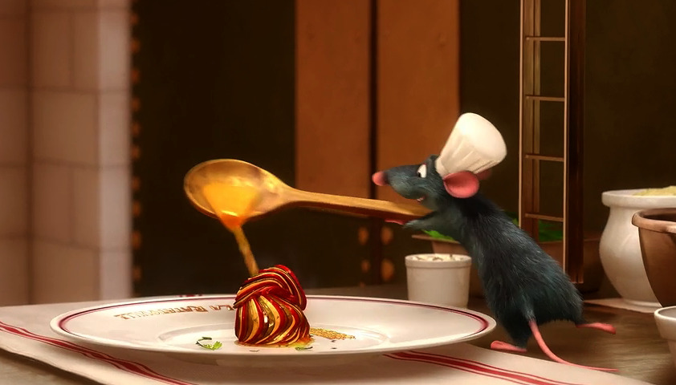

Home
Remy's Ratatouille

Description
Probably the most iconic Disney food out there — and it's so tasty not even Ego could resist it!
Ingredients
- 6 tomatoes
- 2 red bell peppers
- 3/4 cups vegetable broth
- 2 sprigs of thyme
- 1 clove garlic
- 1/2 onion
- olive oil
- green squash, yellow squash, and japanese eggplant
- salt, pepper
- chive for garnish
Steps
- Roast the peppers over a flame until charred, place into bowl covered before peeling and chopping them.
- Boil 3 tomatoes (slice x's on bottoms) for about 1 minute, place in an icebath before peeling and
chopping them.
- Sautee the onion and garlic in olive oil. Add the peppers, tomato, thyme, and vegetable stock into the
pan. Simmer for a few minutes, until most of the liquid is reduced.
- Blend until it's fully smooth and set aside!
- Slice tomatoes, squash, and eggplant into thin slices.
- To assemble: Spread a thin layer of sauce on the bottom of the pan. Layer the vegetables carefully and
drizzle olive oil over the top, seasoning with salt and pepper.
- Cover with parchment paper and bake at 350 for 45 mins to an hour, until the vegetables are completely
cooked and slightly browned.
- Plate and garnish with chive.